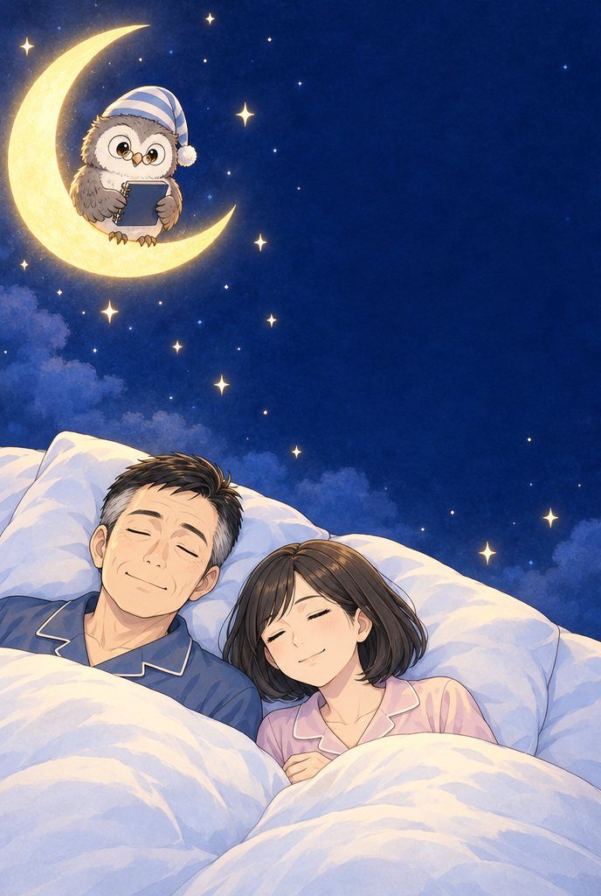
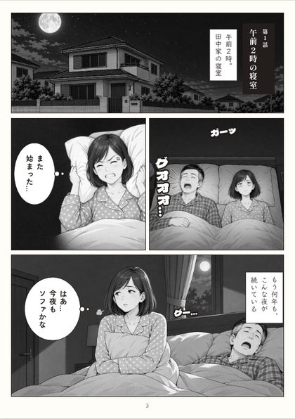
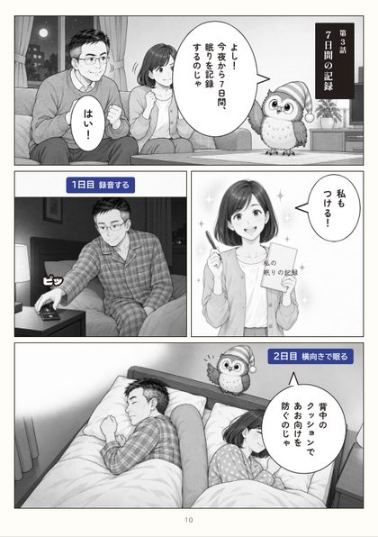
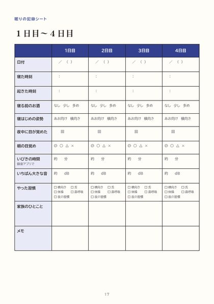

無料プレゼント
「もう、別の部屋で寝て」と言われた夫婦の、７日間の物語
いびきが起こるしくみと、今夜から自宅でできる習慣をマンガで。書きこみ式の「眠りの記録シート」つき。LINEで友だち追加すると、すぐに受け取れます。
LINEで無料で受け取る
A5・20ページ／スマホで読めるPDF（印刷もできます）

小冊子の中身
読んで、書きこんで、今夜から試せる

マンガ全４話（3〜14ページ） 
７日間で試す習慣 
眠りの記録シート
- 3〜14ページマンガ「私の眠りの記録」：いびきのしくみ、４つの原因、病院に相談すべきサイン、７日間の習慣
- 15ページセルフチェック（いびきのお悩み８項目と、受診の目安）
- 16〜18ページ眠りの記録のつけ方と、７日分の記録シート
- 19ページ今夜からできる５つの習慣（チェック欄つき）
受け取ったあと
LINEで、７日間の記録をそっとサポートします
小冊子が届きます
友だち追加のあと、すぐにLINEのトークに届きます。
７日間、夜にひとことお知らせ
記録と、その日に試す習慣を、毎晩１通だけお送りします。
７日目に、録音を聞き比べ
１日目と７日目の録音の聞き比べ方と、続け方の動画（無料）をご案内します。
LINEでは、記録のサポートのほか、有料のプログラムのご案内をお送りすることがあります。配信はいつでも止められます（トークの「配信停止」またはブロック）。
よくあるご質問
よくあるご質問
本当に無料ですか？
はい。小冊子も、７日間のLINEのサポートも無料です。
家族のいびきに悩んでいます。私が受け取ってもいいですか？
はい。マンガは、いびきをかくご本人と、隣で眠るご家族の両方に向けて描いています。
スマホが苦手でも読めますか？
LINEのトークに届くリンクを押すと開けます。印刷して読むこともできます。
病院に行ったほうがいいか迷っています。
寝ている間に呼吸が止まると言われた、日中に耐えられないほど眠い、などの場合は、まず睡眠外来・耳鼻咽喉科・呼吸器内科などでご相談ください。小冊子の15ページにも目安をのせています。